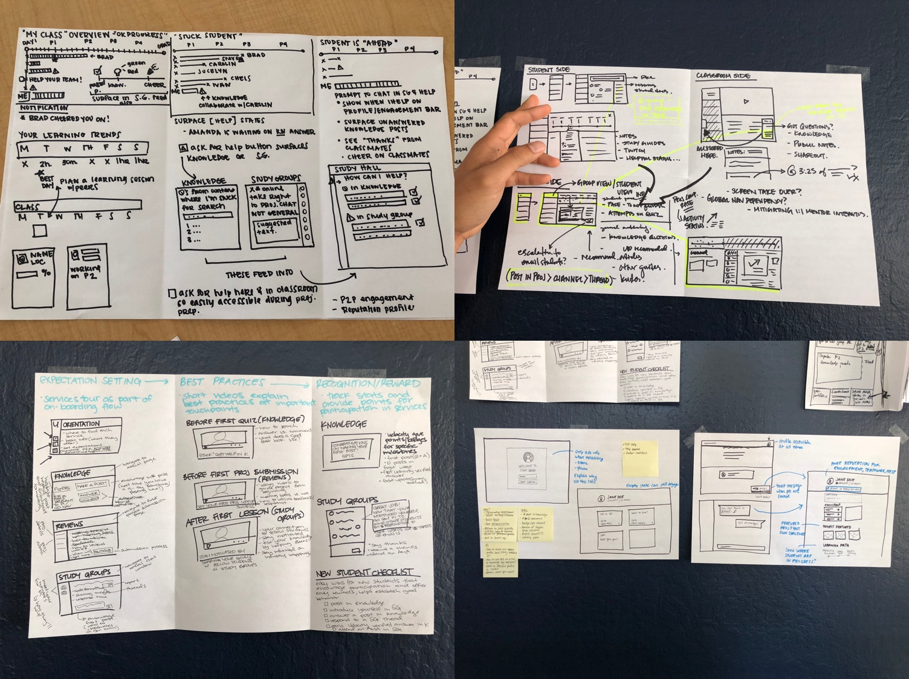

Connecting students to their community through chat
The Udacity Student Hub connects students to a community of knowledgeable mentors who provide support and guidance, and to Udacity staff and industry experts for extracurricular learning and engagement.
Studying online is incredibly hard. It takes a lot of grit to master the skills Udacity taught like machine learning and data science, and we had often heard from our students that it was difficult to stay motivated, challenging to find time, tough to unblock themselves, and just downright lonely.
We had tested and iterated a whole range of community and help experiments prior to this that each showed promising results in addressing our students’ problems, but also had major downsides. We were looking to finally combine our learnings from all experiments and to use that to create the ultimate community experience for our students.
One PM, an engineering manager, two backend engineers, three frontend engineers, a data scientist, two operations managers, and me as the product designer. We later added two iOS developers and two Android developers to the team in an effort to extend Student Hub to our mobile apps.
The project took about 4 months to launch
What factors propel a student forward in their course? Based on past learnings and some user interviews our researcher conducted, a set of key factors were found.
Another designer and I organized a two day design sprint with part of the team to absorb all our findings and brainstorm ideas on how this next product can address our student’s needs. Armed with a box of sharpies and blank paper, our group came up with a large variety of compelling ideas to address a mixture of these factors.
Based on research, feasibility, and company goals, we decided to focus on primarily addressing the technical help and community needs, and to do this through chat. I started working on translating this vision to lo-fidelity wireframes.
We realized desiging the ideal state for what would eventually be Student Hub was a big investment of time and money, so we wanted to do an early test of the core concept by modifying one of our current products, Chat.
Organized project and lesson rooms,, and had no mentors or Udacity staff available.

Organized by project rooms that are locked until previous project has been completed. Mentors are available in project rooms.
After a couple months of running the experiment, we had gathered enough data, and it was promising. Overall, students benefited from interacting with mentors and fellow classmates who had specific and shared experience with the project they were currently working on. Some interesting statistics:
Students successfully completed projects 20% faster and took a median of 14 days to submit and pass a project, whereas students without access took more than 18 days.
Data at the time showed that 91% of students with access to community features were watching conversations, with 45% of the same students actively participating in messaging.
Every Nanodegree program a student enrolls in comes with access to the Student Hub. The Student Hub features two distinct areas: Community and Guided Study.
Due to the speed at which we wanted to make this product available to our students, most of our testing was actually done after launching to a small subset of our students and quickly iterating from there.
Udacity is continuing to refine the Student Hub concept and understand what mixture of features and community will most effectively help students progress and graduate from their online course. The next focus will be engagement.